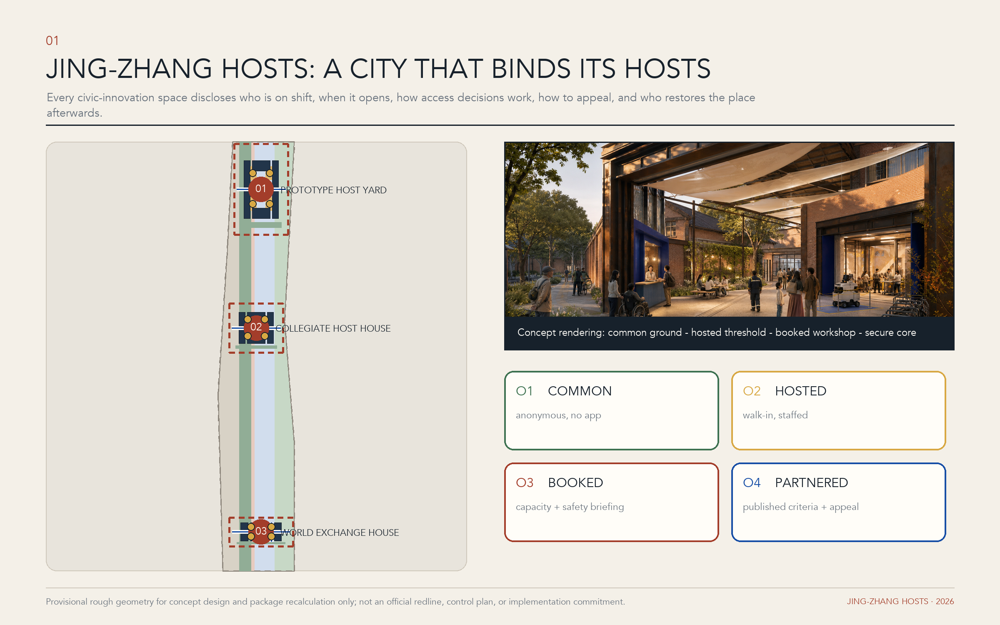
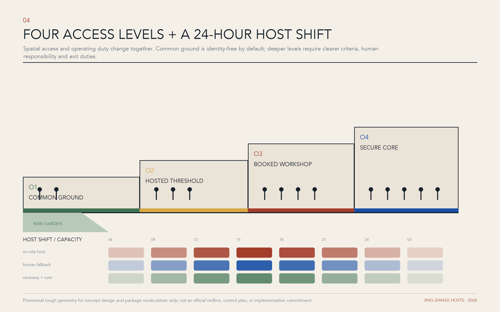

Prototype Host Yard
Controlled prototypes, open lab days, repair back-of-house and safety red teams.
Urban hospitality is not visitor guidance. It is the verifiable duty of every civic-innovation space to open, explain, connect, mediate and restore.
Concept rendering, not a site photograph. All boundaries and design moves await official data and professional verification.

Land-use structure · Mobility and walking · Blue-green public space
Building inventory, ownership and controls are not public. The proposal only offers adaptive-reuse or reversible-infill prototypes, to be developed after boundary, fire, heritage and operator verification.
Assumptions：Provisional boundaries neither drive the composition nor support precise statutory scoring.
Controlled prototypes, open lab days, repair back-of-house and safety red teams.
Civic issues, visiting research, no-app companion routes and professional rehearsals.
Enterprise adoption, global exchange, night hosting and contribution records.

FAR, height, total floor area and official investment remain pending and are not replaced by numbers in imagery.
The package shares one source across GeoJSON, metrics, matrices, drawings and offline pages, then runs deterministic, spatial, visual and professional-evidence checks.
Formal professional scoring still awaits official SITE_BOUNDARY and three KEY_AREA polygons. Maintainers determine the review impact; this proposal does not claim approval, implementation or government endorsement.
Official announcement, agent taskbook, national urban-design and control-plan measures, land-use classification guide, and seven first-party international cases.
Exact official geometry, ownership, surveyed buildings, utility capacity, statutory intensity, height and operator commitments are unavailable; design moves are concepts for professional development.